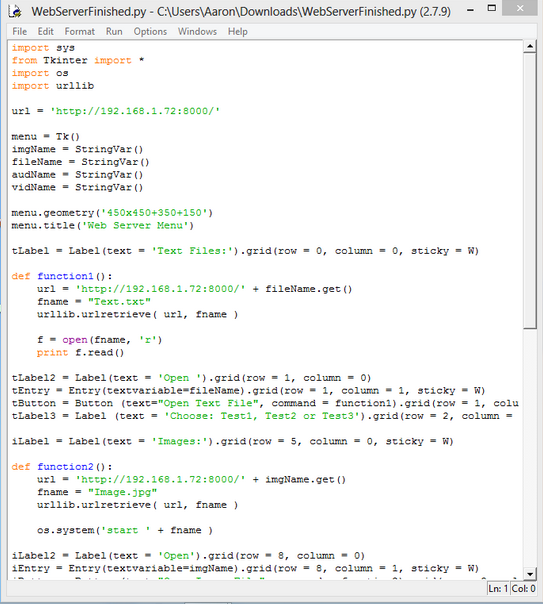
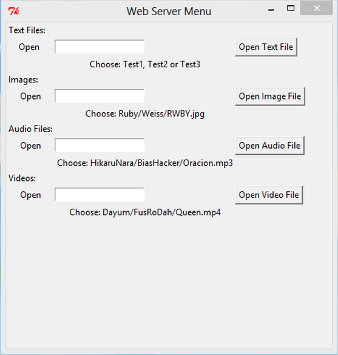

For our third and final project, we were given the task of creating a web server using a Raspberry Pi and to remotely access the files on the Pi on another work station.
The first step was getting used to the Raspberry Pi and an operating system I have never used before being Linux. Setting up the Pi was rather straight forward, the Pi had a inbuilt installer that lets the user choose the type of operating system they want. I chose to download Raspbian which was the recommended package the Pi had given me.
The Pi is an extremely compact and mobile piece of equipment, this made it very easy to leave powered and connected to the internet anywhere at home, without taking up space and allowing it to be accessed remotely.
The biggest learning curve for me personally would have been getting my head around a completely command line based operating system such as Linux. Customising the OS was extremely difficult and small things such as changing the time before the Pi sleeps would require a specific command I did not know. I did a lot of research on Raspbian using different forums and sites such as StackOverflow, these gave me a library of information to dig through and though I would never be able to read it all, the information was all extremely helpful.
Linux on a whole is a very simple and straightforward operating system, though still rather visual with its task bar and desktop, once you get your head around it, it becomes very easy to navigate.
To begin setting up for the web server I create a folder to hold all the files i wanted to access. I created a folder called WebServer and added 3 files from 4 different file formats being text, image, audio and video files. Once the folder was complete I opened up Terminal and began to set up a web server using the python -m SimpleHTTPServer, this created a vanilla web server accessible through the Pi’s IP address.
With this completed the first half of the project was ready, the second more difficult task was to create a menu like system using Python to access these files. Accessing the files was very simple and easy for me to do with my own knowledge of Python, the only part that required a little bit of external research was creating the GUI menu using a library called TKinter.
Reading a little bit into the library using TKinter’s website, I had a general understanding of most of the functions and different features I needed to complete the menu.
I was very happy with how the menu looked at the end of the project. The design was consistent and user friendly, I included prompts on file names the user can choose and named each button accordingly.
I made a entry box so that users can type in their own choice of file to download and open from the server, giving them control of the application, making them feel more comfortable.
I asked a few friends to try and use my menu without any of them having seen it before, they all were able to use it only coming into one problem which was that the menu needed the text in the entry box to be case sensitive to the file the user wants.
Overall this project was one in which I learnt the most from. Using Linux for the first time was quite a fun experience and I would definitely look forward to come into contact with it in the future. Creating my own GUI was very interesting also and has motivated me to do play around with it outside of university. This is definitely the project I had most fun with from planning, implementation and testing were all very enjoyable and didn’t pose any annoyances, even troubleshooting problems was interesting.